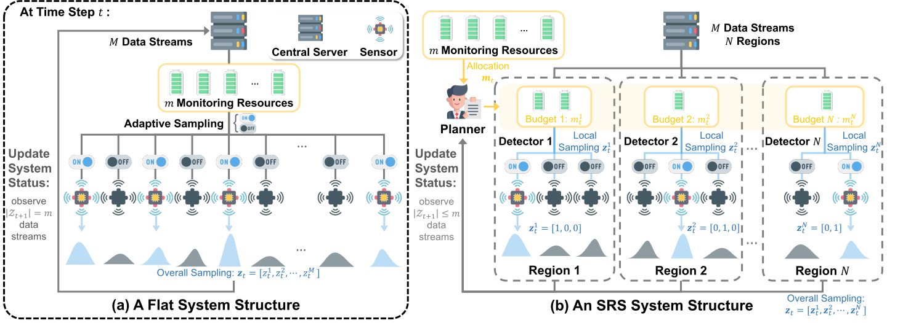
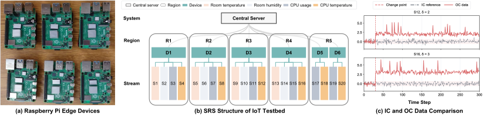

Multi-Agent Reinforcement Learning for Anomaly Detection with Hierarchical Adaptive Sampling Strategy
Xin Xia, Jie Guo, Ziqian Zheng, Yujie Ma, Chen Zhang, and Kaibo Liu
Technometrics (accepted)
Finalist, IISE QCRE Best Track Paper Competition, 2025Limited monitoring resources are allocated across many data streams by a hierarchy of learned agents, so that the streams most likely to carry the change are observed first.



